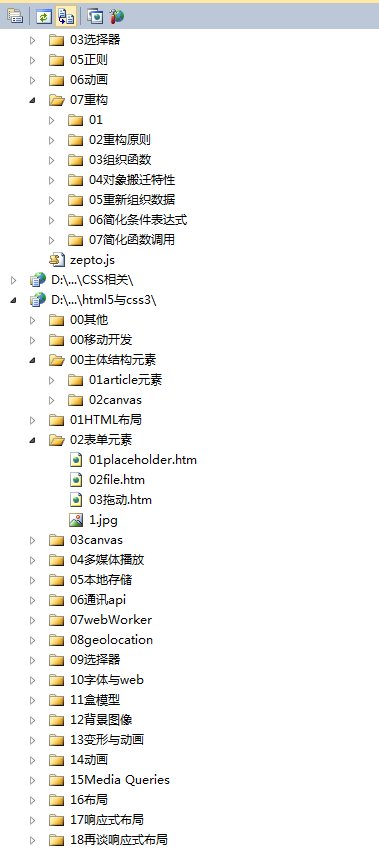
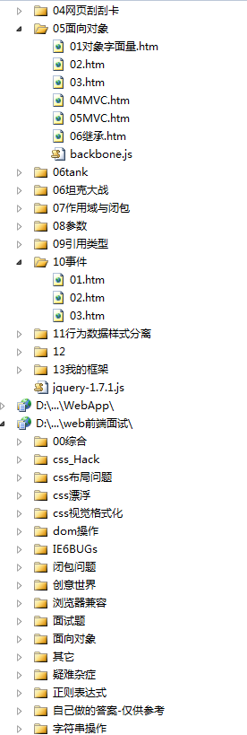
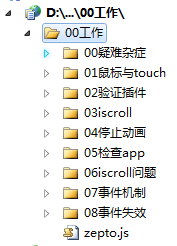
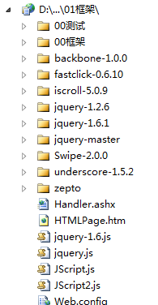
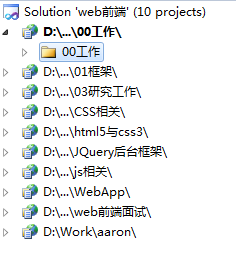
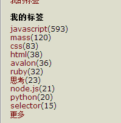

题记
四月前，低迷、失志踌躇不前形容自己再好不过，中途来了一次彻底的醒悟，于是
我发现自己变得勤奋了，我发现自己乐于付出了，因为我知道安逸的生活磨砺不出优秀的能力，没有能力的人何来安逸？
于是我清晰了自己的理想，明确了自己的目标
天道酬勤，敢于自省且突破自身的人总会得到上天的眷念，前提是你是不是正在作死！
想找个好点的工作安逸度日，一点一点的吃着老本，甚至还感觉游刃有余？
不再精进自己的能力，做着毫无工作量的事情，却又抱怨自己的才华得不到施展？
于是，突破不了工作的困局就一再的消磨自己的意志，
丧失了思想会看不清东西，失去了眼界就是折翼的雄鹰，生活带来的是活生生的真实，最后只会发现很无力
我们无力改变生活的一切，是因为我们没有改变的担当，我们缺乏直面变化的勇气，我们不敢改变自己的根本原因还是我们安于现状
简言之，贪生怕死
想获得更多，就需要折腾的勇气，突破不了工作的困局就突破自身的瓶颈
工作与理想总要有一个在路上！人不能没有希望，处于困境的人需要改变不是环境而是自己
改变会带来痛苦吗？勤奋会带来痛苦吗？
有能力才能阻止改变，敢做就要有敢死的气魄
我可以清晰明白的告诉你，你所认为的痛苦不是真正的痛苦，真正的痛苦是无能！
无能最是痛苦，无奈最是痛苦，不停的后悔，不停的自责最是痛苦，勘不破，最是迷障！
在信息爆炸的年代，生活本来就很浮躁了，我们不能随波逐流，我们需要重新踏上征途，我们应该给自己一个目标
我们必须还自己一个理想，哪怕他不能实现！至少你努力过，一旦你努力了却发现理想好像可以更高点，这才是真实
有了目标有了理想，就需要不懈的奋斗，不要贪生怕死，不要舍不得付出，生活需要不是一时的冲劲，而是持之以恒的付出，
所以，兄弟姐们请找回自己的初心！
做好前端
咳咳，好久没有水一发了，久不出江湖，我竟然忘了我最初的爱好是武侠，甚至说书也是我的理想工作之一
但是，兄弟们，我不得不说前端是一个值得你们付出的工作，甚至整个程序是值得你倾尽全力的工作，因为我们的工作很有趣，我们几乎每天都有新的BUG
我老大刚刚才花了一个多小时找到一个我刚埋的坑（其实是他在我这里提交的代码！哼），所以我们工作看着无时无刻不对着电脑，好像无事可做
其实我们天天工作是换样的，总会有一个彩蛋让你猜到，当你解决疑难BUG时候的惊喜是其它工作来不得的，至少他没那么多
所以，要做好前端首先要爱好前端，首先要热爱自己的工作，知道自己的工作是很有趣的
关于离职
最近有一个师妹说她想离职，问我可以推荐个工作不，对于离职这个事情，我其实是有不同的想法的
一个人进入优秀的团队，再遇到一个好的老大，那简直就是中了彩票一样，不知不觉自己就成长起来了
但是，这种几率却很低，所以多数朋友的工作是不如意的，不如意的原因各种各样，但是我还是认为责任主要在自己，因为没有团队会放弃创造价值的人
你在团队不如意，一定是你自己不努力，如果你努力了仍然不如意，就是你努力的时间不够长，如果你自己真的做的很好了还是不如意的话
我就建议你离职了，因为经过你如此的工作，离职涨个50%完全不是问题，问题是你是不是真的在努力
所以有不如意想离职的朋友，我其实是不建议的，有为了钱而离职的朋友，我更建议你为了发展而离职
如何成为优秀的前端
首先声明我不是优秀的前端，我甚至不是一个合格的前端，优秀前端是我一年后的目标，有一次看到我的名字和汤姆大叔与正美一并出现，吓得我差点失禁！
我虽然不是一个优秀的前端，但是我明显感觉我正在向一个靠谱前端靠近，所以这方面我还是有些经验可以与大家交流的
书籍推荐
书籍这个事情贵精不在多，我这里推荐两本即可：
《javascript高级程序设计》
《CSS权威指南》
为什么只推荐两本呢？因为我发现很多朋友看书其实是有问题的，我个人看javascript高级程序设计至少三篇，其中写了很多demo
而很多朋友看书就跟看连环画似的，第一次看一个星期就看完了，我是该说你悟性高呢还是喜欢装B啊，这种书要细看，要慢慢看，要反复看
学习要有成果，学习要有效率，比如这小半年我就干了这些事情，是拿的出来的：


那各位看书后，或者看博客后会留下痕迹么，如果留不下痕迹，那么多数就给忘了
看经典的书切记要细，切记要看懂，看不懂就反复看，最后一定要留下学习成果
博客推荐
除了看书以外就是建议大家写博客了，这个也是一种学习成果，不要怕写不好，写着写着就写好了
我现在技术博客量是140左右，其中自己满意的博客是10篇左右，所以说，博客质量其实不高，但是高质量博客是精华，哪里又有那么多？？？
高手不是一下就来的，简单将我和高手的差距就是：

这才是真正的差距，这种差距不是一天两天可以弭平的，甚至几年都不能赶上，但是我们需要超越的是自己，工资上来了才是王道，其它不用管那么多
司徒正美
javascript方面，首推正美的博客，你要是细细的读过一些文章就会发现，你现在考虑的东西，正美两年前就搞了，这就是差距
正美创了几个群，里面有2V以及2牛，都是神一般的存在，而且是超越正美的存在，不信去试试
张鑫旭
CSS方面的博客首推旭哥的博客，旭哥CSS方面的博客相当优秀，建议大家好好看看
Aaron
我与aaron一直保持着亦师亦友的关系，平时经常交流，他对我帮助甚大，但是道友，我想说一句
你真的有点懒啊！！！你欠我的Jquery源码分析半年前就在写，现在还没写完，我们说好的Backbone源码呢？？？快交出来！
李靖
这是前端后起之秀，还未毕业，隐有高帅富的节奏，他写的博客是初级前端入门的良药，缺点是少了点，后期必成大器
snandy
我本身对他不太熟悉，但是他博客写的挺好的......
博客在精不在多，对于入门级前端来说，上面几位的博客够我们嘚瑟的了，当然，还是那句话：
要好好读，细细读，并且留下学习成果
这里就不推荐大叔的博客了，大叔的博客不适合初学者去读，也不建议初学者去读，因为多数人是看热闹
源码阅读
第三个阶段当然是读源码了，一定要读源码，而且必须好好读！！！这里尤其推荐读自己熟悉并且不太包含思想的源码
比如我上个星期看了下backbone就搞得莫名其妙的，原因是没有用过，这里推荐几个库：
Zepto
zepto与jquery类似，说白了就是借鉴，但是zepto很是轻便，读起来轻松，但是首次读若是没有半个月的话基本就是没读（不考虑神人）
因为工作后很少专门有时间去读源码，读的时候要细细的读，看不懂的地方就反复看，慢慢的就全部清晰了
zepto读完后，整个js的水平会看似上升一大截，这个时候再加紧来点经验就稳稳的前端入门了
underscore
第二个推荐的库是underscore，这个库比zepto还要简单，建议好好读下，务必读明白，不要不懂装懂
Fastclick
若是有移动端编程经验的朋友，建议好好的读下这个库，写的非常不错，完了后会让你对移动端的事件兼容有深入的理解
iScroll
与Fastclick类似的库
初级程序员读以上几个库就差不多了，而且建议花一到两个月详细的研究一个库，并且将里面的思想用于项目中去，这样才能真正的吸收
读源码不是看热闹，看热闹会一问三不知
去面试
以上几个阶段结束后，就可以去外面看看自己的斤两了，真的做到以上的朋友，基本是面几个有几个了，真正的瓶颈就出现在大公司了
这个时候又到了另外一个阶段：
① 深度-细节点
② 广度-知识面
以细节点来说，真正的高手一个javascript事件机制就可以问的多数人哑口无言：
① javascript绑定事件的方式
② javascript事件对象
③ 自定义事件
④ 如何触发自定义事件
⑤ zepto/jquery事件机制
⑥ 解决移动端300ms延迟
⑦ ios android事件差异
⑧ 事件冒泡/捕获机制以及鬼点击
⑨ javascript事件底层实现......
以CSS来说，一个position就够了
① Position的各种属性值
② 行内元素块级元素
③ 行高问题
④ fixed在移动端的问题
⑤ 由fixed引导至viewport
⑥ 缩放等等问题......
所以，javascript真正的高手对这些把握是很细的，不是全部都会，但不可能全部都不会。这里可能会有朋友提出学院派以及实干派的想法
其实我的道友Aaron就是真正的实干派，完全白手起家，他就肯定知道这些问题，至少七七八八
所以深度一定要有，而且是慢慢积累的，不信看正美那700篇博客吧，有了深度再提广度，不然你的广度就不值钱
深度完了就是广度，光有深度还不够还得有广度，广度代表业务能力，代表工作水平
① nodejs
② 打包工具
③ H5嵌入APP
④ 移动端调试工具（如何在手机console，如何在页面上调试手机程序）
⑤ 压缩工具
⑥ 项目管理工具（git/svn）
⑦ 各种开源框架
这些都是广度的体现，优秀的人不只是知识稳固，而且还能推动团队使用新技术，带给团队不一样的感觉
前端知识点繁杂，绝不止局外人看见的那么点
若是你发现各个大公司想去就去，offer拿到手软了，那么恭喜你，你成为了中级程序员了！！！！
然后再怎样我就真不知道了，我的眼界暂时只能到这里了，希望对处于迷茫阶段的前端同学有所帮助
14年计划
说到这里，水文也应该结束了，我说下我14年的计划吧，争取15年能够实现自己优秀前端的梦想：
① 单页应用框架
② 单页应用UI库
③ 正则表达式
④ nodejs
⑤ grunt打包
⑥ 重构一书重新学习
⑦ 面向对象编程重新学习
进入水文到此为止，希望对各位有用
招聘信息
亲爱的道友们，我其实在我们团队只是中等水平，我们上海携程无线是一个优秀的团队，
如果你现在正在找工作，请加入我们吧！！！
在我们团队，你可以肆无忌惮的黑自己的老大，你会体会到和谐的氛围，当然妹子多多的！
要求：靠谱前端，吃苦耐劳，待遇刚刚的！！！
需要的朋友可以私信我
顺便推广道友的jquery技术交流群：239147101